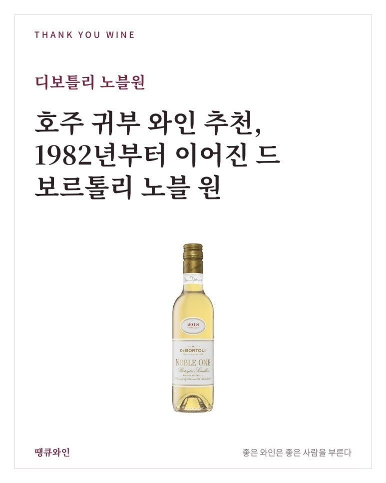
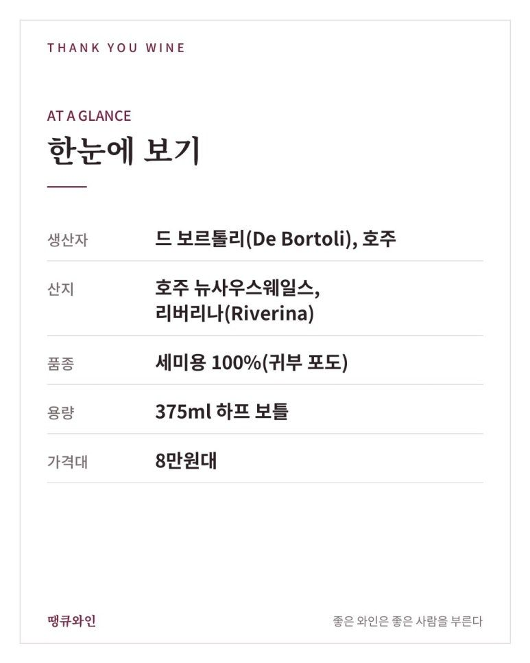
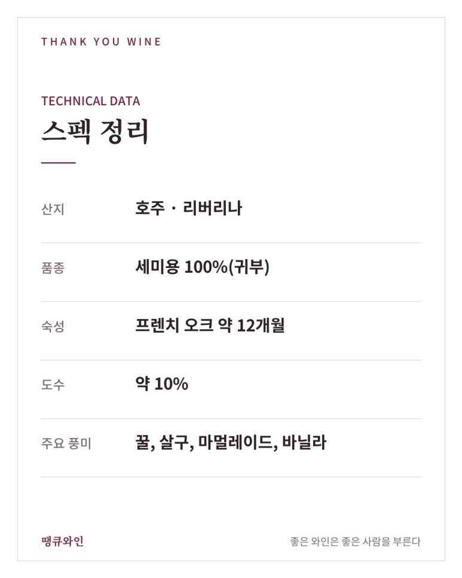
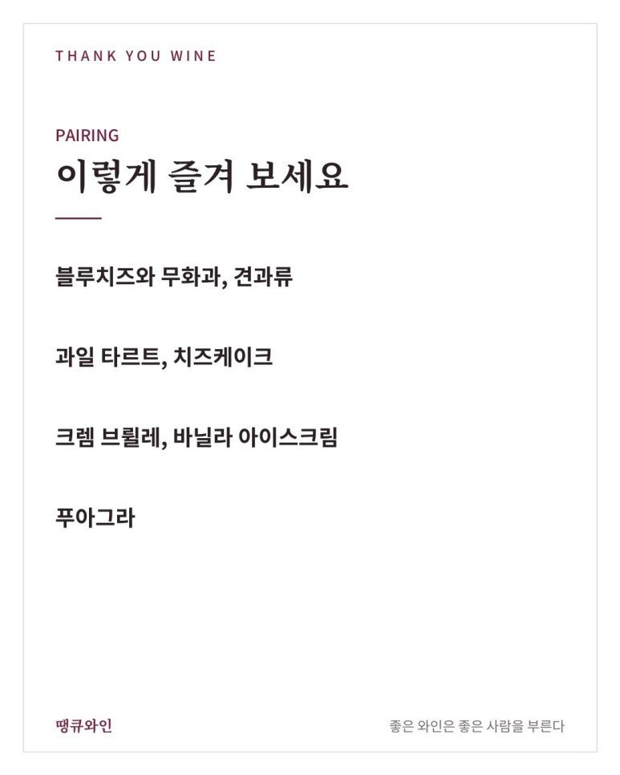
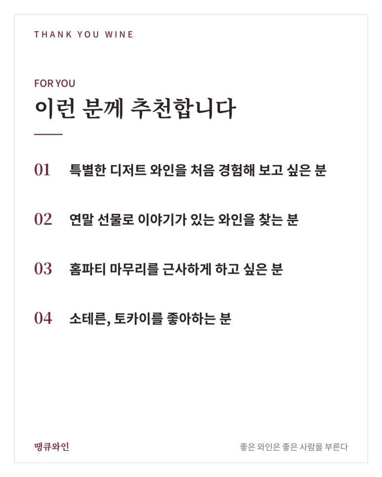
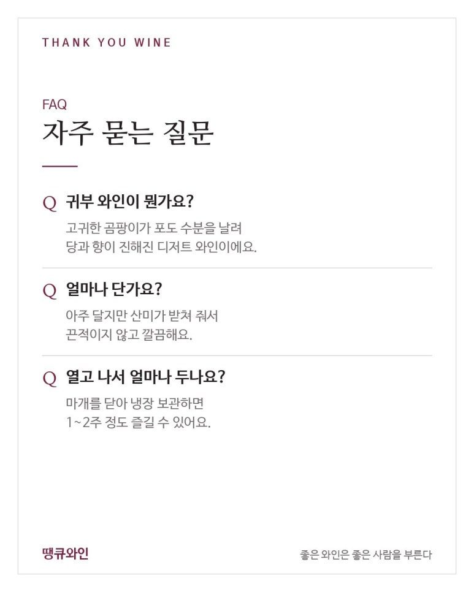

디보틀리 노블원
호주 귀부 와인 추천, 1982년부터 이어진 드 보르톨리 노블 원 보트리티스 세미용
곰팡이가 핀 포도로 와인을 만든다고 하면 다들 깜짝 놀라십니다.
곰팡이가 핀 포도로 와인을 만든다고 하면 다들 깜짝 놀라십니다.
그런데 세계에서 가장 귀하게 대접받는 디저트 와인들이 바로 그렇게 태어납니다.
호주 대표 귀부 와인 + 1982년 첫 빈티지 + 꿀·살구·마멀레이드 향

한눈에 보는 노블 원
- 생산자
- 드 보르톨리(De Bortoli), 호주
- 산지
- 호주 뉴사우스웨일스, 리버리나(Riverina)
- 품종
- 세미용 100%(귀부 포도)
- 용량
- 375ml 하프 보틀
귀부 와인, '고귀한 곰팡이'가 만든 와인
가을 아침 안개가 끼고 오후에 햇볕이 드는 포도밭에서는 보트리티스 시네레아(Botrytis cinerea)라는 곰팡이가 포도 껍질에 자리를 잡습니다.
이 곰팡이는 껍질에 아주 작은 구멍을 내서 포도 속 수분을 날려 보냅니다.
포도는 쪼글쪼글 말라 가지만, 그 안에 당분과 산미, 향은 진하게 응축됩니다.
그래서 이 곰팡이를 '고귀한 부패(Noble Rot)'라고 부르고, 이렇게 만든 와인을 귀부 와인이라고 합니다.
프랑스 소테른, 헝가리 토카이가 대표적이고, 호주에서 그 이름을 이어 온 와인이 바로 노블 원입니다.
노블 원은 왜 특별할까?
1982년, 드 보르톨리 가문의 대런 드 보르톨리(Darren De Bortoli)가 호주에서 처음으로 이 스타일의 귀부 세미용을 만들었습니다.
이름 '노블 원(Noble One)'도 '고귀한 부패(Noble Rot)'에서 왔어요.
그 뒤로 노블 원은 호주를 대표하는 디저트 와인으로 자리 잡았고, 지금도 귀부 와인을 이야기할 때 빠지지 않는 이름입니다.

노블 원 테이스팅 노트
깊은 황금빛, 잔을 기울이면 꿀처럼 천천히 흘러내립니다.
향은 꿀, 말린 살구, 오렌지 마멀레이드, 바닐라가 겹겹이 올라오고, 입에서는 진한 단맛을 또렷한 산미가 받쳐 줘서 끈적이지 않고 깔끔하게 끝납니다.
DE BORTOLI NOBLE ONE
- 산지: 호주 · 리버리나
- 품종: 세미용 100%(귀부)
- 숙성: 프렌치 오크 약 12개월
- 도수: 약 10%
- 주요 풍미: 꿀, 살구, 마멀레이드, 바닐라

몇 도로 마시면 좋을까?
9~11도로 차갑게, 작은 잔에 조금씩 따라 드세요. 375ml 한 병이면 4~6명이 디저트로 나눠 마시기 좋습니다. 열어 둔 뒤에도 냉장 보관하면 1~2주 정도 즐길 수 있습니다.
어울리는 음식
- 블루치즈와 무화과, 견과류
- 과일 타르트, 치즈케이크
- 크렘 브륄레, 바닐라 아이스크림
- 푸아그라
특히 블루치즈 한 조각과 노블 원 한 모금은 꼭 한번 경험해 보세요. 짠맛과 단맛이 만나는 순간이 정말 인상적입니다.

이런 분께 추천합니다
- 특별한 디저트 와인을 처음 경험해 보고 싶은 분
- 연말 선물로 이야기가 있는 와인을 찾는 분
- 홈파티 마무리를 근사하게 하고 싶은 분
- 소테른, 토카이를 좋아하는 분


자주 묻는 질문
Q. 귀부 와인이 뭔가요?
A. '고귀한 곰팡이'가 포도 껍질에 작은 구멍을 내 수분을 날려서, 당분과 향이 진하게 응축된 포도로 만든 디저트 와인입니다.
Q. 얼마나 단가요?
A. 아주 달지만 산미가 또렷하게 받쳐 줘서 끈적이지 않고 깔끔하게 마무리됩니다.
Q. 열고 나서 얼마나 두고 마실 수 있나요?
A. 마개를 닫아 냉장 보관하면 1~2주 정도 즐길 수 있습니다.
한 모금으로 기억에 남는 와인
노블 원은 자연이 준 고귀한 곰팡이와 40년 넘는 시간이 만든, 호주를 대표하는 귀부 와인입니다.
그래서 저는 이 와인을
"식사의 마지막을 가장 오래 기억하게 하는 한 잔"
이라고 소개하고 싶습니다.
올해 연말, 디저트 접시 옆에 노블 원 한 병을 올려 보세요.
궁금한 점은 땡큐와인으로 편하게 물어봐 주세요. 와인 고르는 것부터 선물 포장까지 함께 도와드릴게요.
이 글은 땡큐와인 네이버 블로그에 먼저 올린 글이에요.